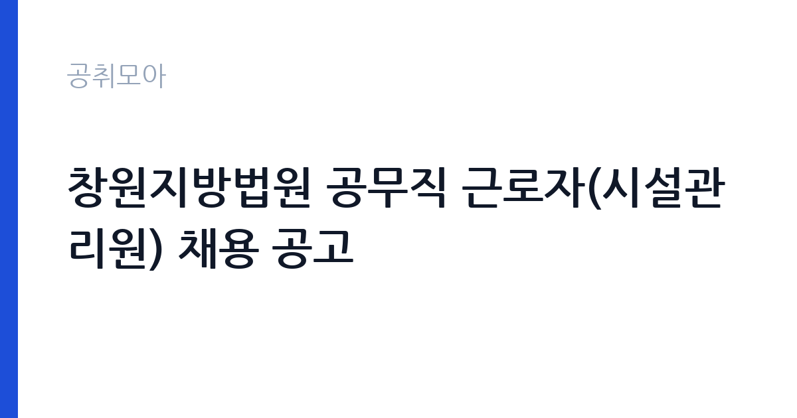

[국가기관] 창원지방법원 공무직 근로자(시설관리원) 채용 공고
대법원 창원지방법원 · 경남 · 마감 2026-10-19 (D-12) · 출처 나라일터

한눈에 보는 모집 조건
| 기관 | 대법원 창원지방법원 |
|---|---|
| 공고명 | 창원지방법원 공무직 근로자(시설관리원) 채용 공고 |
| 고용형태 | 공무직 |
| 근무지 | 경남 |
| 게시일 | 2026-10-08 |
| 마감일 | 2026-10-19 (D-12) |
지원자격, 이렇게 읽으세요
- 공무직 근로자 1명
- 접수 ~2026-10-19 마감
- 세부 조건은 원문 공고문 확인
공무직 시설관리원은 보통 관련 분야 자격증이나 실무 경력을 요구합니다. 전기 분야는 전기 관련 자격증 소지자를 우대하거나 필수로 묻는 경우가 많고, 기계와 영선 분야도 해당 경력을 평가합니다. 법원 공무직 채용은 서류전형과 면접전형으로 진행되는 경우가 많아, 경력기술서와 자기소개서의 완성도가 당락을 가릅니다. 연령과 병역, 결격사유 등 공통 요건은 공고일 기준이며, 창원 근무가 가능해야 합니다. 정확한 응시자격과 우대 조건, 제출서류는 원문 공고문에서 확인하시기 바랍니다.
이 공고의 포인트
이 공고의 매력은 법원 소속 공무직이라는 점입니다. 정년이 보장되는 안정적인 신분으로, 청사 시설관리라는 명확한 직무를 맡게 됩니다. 1명 선발이라 경쟁이 있을 수 있지만, 시설관리 경력을 갖춘 지역 인재에게는 희소한 기회입니다. 법원 청사는 근무 환경이 쾌적하고 규율이 분명해 장기 근무 만족도가 높은 편입니다. 서류와 면접 중심 전형이라 필기 부담이 적습니다. 다만 전기와 기계 중 어느 분야를 뽑는지, 교대근무인지 통상근무인지가 중요하므로 원문 공고문에서 근무조건을 반드시 확인하시기 바랍니다.
전형은 어떻게 진행되나
전형은 원문 공고문에 안내된 절차를 따릅니다. 법원 공무직 시설관리원 채용은 서류전형과 면접전형 순으로 진행되는 경우가 일반적입니다. 서류전형에서는 응시자격 충족 여부와 경력, 자격증을 평가하므로 경력증명서와 자격증 사본을 빠짐없이 준비해야 합니다. 면접에서는 시설관리 실무 경험과 비상 상황 대응 능력을 묻는 질문이 나옵니다. 인천지법과 부산고법 등 다른 법원에서도 같은 직군을 수시로 뽑고 있어, 이번에 떨어지더라도 다음 기회를 노릴 수 있습니다. 세부 일정과 합격 배수는 원문 공고문에서 확인하시기 바랍니다.
이런 분께 추천해요
- 전기나 기계, 영선 시설관리 경력을 갖춘 분께 추천합니다. 실무 경험을 살릴 수 있는 자리입니다.
- 창원 지역 장기 근무를 희망하는 분께 추천합니다. 법원 공무직은 정년이 보장됩니다.
- 필기시험 부담 없이 서류와 면접으로 승부하고 싶은 분께 추천합니다.
지원 전 체크리스트
- 원문 공고문에서 응시자격과 우대 조건, 모집 분야를 확인했습니다.
- 경력증명서와 자격증 사본, 졸업증명서 등 제출서류를 준비했습니다.
- 경력기술서에 담당 시설과 업무 범위, 성과를 구체적으로 적었습니다.
- 마감일인 10월 19일 이전에 접수를 완료하고 접수증을 저장했습니다.
모집 일정과 제출 타이밍
마감일은 2026년 10월 19일입니다. 1명 선발이라 서류 완성도가 중요하므로 마감 직전 제출은 피하고 여유 있게 접수하시기 바랍니다. 서류합격자 발표와 면접 일정은 원문 공고문의 전형 일정을 따릅니다. 경력증명서 발급에 시간이 걸릴 수 있으니 즉시 신청하시기 바랍니다. 면접까지 남은 기간에는 본인 경력 중 시설관리 성과를 사례로 정리해 두시기 바랍니다.
직무 이해하기: 국가기관
법원 시설관리원은 청사의 전기와 기계 설비, 영선 시설을 점검하고 유지보수하는 업무를 맡습니다. 냉난방과 승강기, 소방 설비의 일상 점검과 고장 대응, 외주 업체 관리, 에너지 사용량 관리가 주요 업무입니다. 재판이 열리는 청사라 보안과 질서 유지에 협조해야 하며, 당직이 있는 경우 야간과 주말 근무가 발생할 수 있습니다. 전기 분야는 감전과 화재 예방이, 기계 분야는 설비 예방 정비가 핵심이므로 안전 수칙 준수가 가장 중요하게 평가됩니다.
자기소개서 작성 팁
자기소개서에서는 시설관리 실무 경험을 구체적으로 쓰는 것이 전부입니다. 다뤄본 설비의 종류와 규모, 담당 범위, 고장 대응과 예방 정비 성과를 수치와 함께 제시하시기 바랍니다. 야간 당직과 긴급 출동 경험을 언급하면 실무 감각을 보여줄 수 있습니다. 법원이라는 공공기관의 특성을 이해하고 보안과 규율을 지키겠다는 태도를 한 문장으로 정리하면 마무리가 좋습니다.
면접 준비 포인트
면접에서는 실무 능력과 성실성을 집중적으로 평가합니다. 본인이 관리해본 시설의 종류와 고장 사례, 대응 과정을 단계별로 설명할 수 있어야 합니다. 전기 안전과 소방 설비에 대한 기본 지식을 묻는 질문이 나올 수 있으므로 정리해 두시기 바랍니다. 당직과 긴급 출동이 가능한지 묻는 질문에는 솔직하고 긍정적으로 답변하시기 바랍니다. 공공기관 면접 예절을 지키고 직무 중심으로 답변을 구성하시기 바랍니다.
급여·근무조건 읽는 법
보수는 법원 공무직 보수 기준을 따르며 직무등급과 단계에 따라 기본급이 정해집니다. 참고로 대법원청사 2025년 시설관리원 공고에서는 2등급 1단계 기준 급여 합계가 약 246만9천원 이상으로 안내된 바 있으나, 이는 당시 서울 청사 기준이므로 창원 공고와 다를 수 있습니다. 정확한 기본급과 수당, 교대근무 여부는 원문 공고문의 보수 안내에서 확인하시기 바랍니다. 당직과 시간외근무가 있으면 별도 수당이 추가됩니다. 실수령액은 연금과 보험, 세금 공제 후 금액이므로 세전 급여와 구분해서 이해하시기 바랍니다.
자주 묻는 질문
- 1명만 뽑는데 경쟁률이 높습니까
소수 선발이라 서류 완성도가 중요합니다. 시설관리 경력과 자격증을 갖춘 분이 유리하며, 정확한 경쟁률은 합격자 발표에서 확인하시기 바랍니다. - 교대근무입니까
청사별로 다릅니다. 평일 주간 근무에 당직이 추가되는 경우가 많으므로 원문 공고문의 근무조건에서 확인하시기 바랍니다. - 보수는 어느 정도입니까
법원 공무직 보수 기준을 적용받으며 직무등급과 단계에 따라 다릅니다. 정확한 금액은 원문 공고문의 보수 안내에서 확인하시기 바랍니다.
함께 보면 좋은 공고
[국가기관] 보건복지부 요양보험운영과 파견근무자 모집 (3차) — 마감 2026-10-23[국가기관] 2026년 제6회 서청주우체국 공무직 상시계약집배원(농어촌소포배달원) 채용 공고 — 마감 2026-10-15[국가기관] 2026년 제6회 서청주우체국 공무직 상시계약집배원 채용 공고 — 마감 2026-10-15출처: 나라일터 공개정보를 바탕으로 공취모아가 정리한 안내글입니다. 모집 조건·일정은 변경될 수 있으니 지원 전 반드시 원문 공고문을 확인하세요. 본 글은 정보 제공용이며 합격을 보장하지 않습니다.